Show:
TRACES – 7×28 cm, glazed porcelain · 1st choice, discontinued 11 items · 782 m²
 Product photo
Product photoWall tile 7×28 cm
TRACES TRAVERTINO 7X28
7×28 cm · glazed porcelain, 10 mm · 1st choice
Est. weight ≈ 5.1 t
229 m²Ref #148009
 Product photo
Product photoWall tile 7×28 cm
TRACES MARFIL 7X28
7×28 cm · glazed porcelain, 10 mm · 1st choice
Est. weight ≈ 4.6 t
206 m²Ref #148008
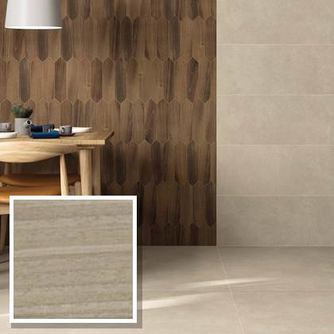
Product photoWall tile 7×28 cm
TRACES ACERO 7X28
7×28 cm · glazed porcelain, 10 mm · 1st choice
Est. weight ≈ 3.1 t
139 m²Ref #148003
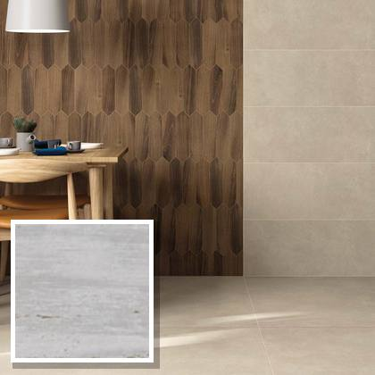
Product photoWall tile 7×28 cm
TRACES BIANCO 7X28
7×28 cm · glazed porcelain, 10 mm · 1st choice
Est. weight ≈ 2.3 t
104 m²Ref #148001
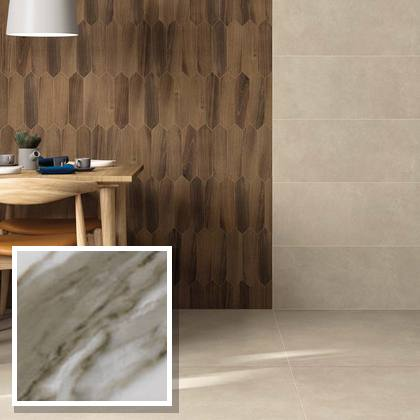
Product photoWall tile 7×28 cm
TRACES CALACATTA 7X28
7×28 cm · glazed porcelain, 10 mm · 1st choice
Est. weight ≈ 0.3 t
14 m²Ref #148006
 Product photo
Product photoWall tile 7×28 cm
TRACES DOLOMITE 7X28
7×28 cm · glazed porcelain, 10 mm · 1st choice
Est. weight ≈ 0.1 t
3 m²Ref #148007
 Product photo
Product photoWall tile 7×28 cm
TRACES ACERO 7X28
7×28 cm · glazed porcelain, 10 mm · 2nd choice
Est. weight ≈ 0.6 t
26 m²Ref #148003-2
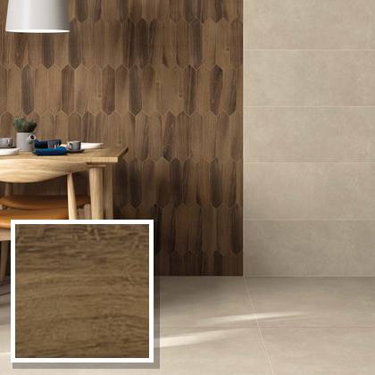
Product photoWall tile 7×28 cm
TRACES NOCE 7X28
7×28 cm · glazed porcelain, 10 mm · 2nd choice
Est. weight ≈ 0.5 t
23 m²Ref #148004
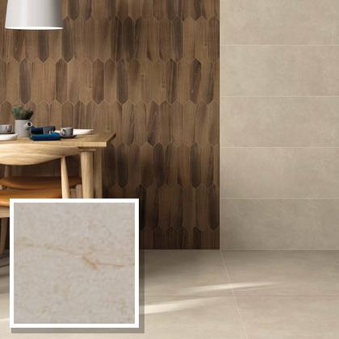
Product photoWall tile 7×28 cm
TRACES MARFIL 7X28
7×28 cm · glazed porcelain, 10 mm · 2nd choice
Est. weight ≈ 0.3 t
15 m²Ref #148008-2
Wall tile 7×28 cm
TRACES TRAVERTINO 7X28
7×28 cm · glazed porcelain, 10 mm · 2nd choice
Est. weight ≈ 0.3 t
12 m²Ref #148009-2
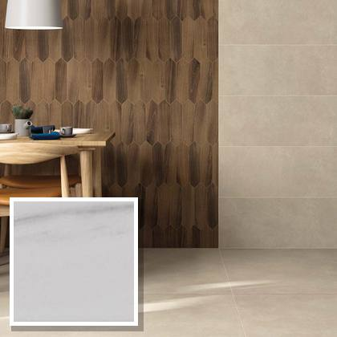
Product photoWall tile 7×28 cm
TRACES DOLOMITE 7X28
7×28 cm · glazed porcelain, 10 mm · 2nd choice
Est. weight ≈ 0.2 t
11 m²Ref #148007-2
SKEMA – subway 7.5×30 cm, white-body wall tile, double-fired · 1st choice, discontinued 11 items · 1,444 m²
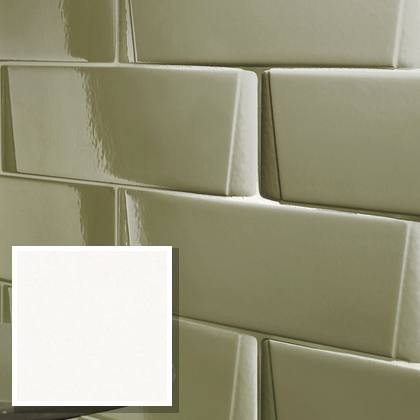
Product photoWall tile 7.5×30 cm (subway)
SKEMA BRIGHT WHITE 7,5X30
7.5×30 cm · white-body wall tile, double-fired, 10 mm · 1st choice
Est. weight ≈ 3.5 t
239 m²Ref #167201
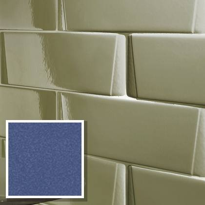
Product photoWall tile 7.5×30 cm (subway)
SKEMA BRIGHT DENIM 7,5X30
7.5×30 cm · white-body wall tile, double-fired, 10 mm · 1st choice
Est. weight ≈ 3.3 t
223 m²Ref #167206
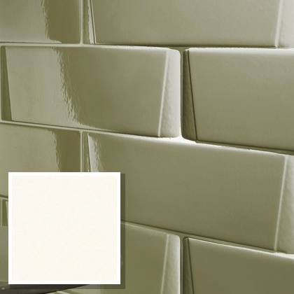
Product photoWall tile 7.5×30 cm (subway)
SKEMA MATT WHITE 7,5X30
7.5×30 cm · white-body wall tile, double-fired, 10 mm · 1st choice
Est. weight ≈ 2.9 t
200 m²Ref #167200
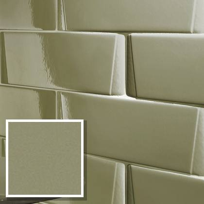
Product photoWall tile 7.5×30 cm (subway)
SKEMA MATT GREEN 7,5X30
7.5×30 cm · white-body wall tile, double-fired, 10 mm · 1st choice
Est. weight ≈ 2.9 t
197 m²Ref #167204
 Product photo
Product photoWall tile 7.5×30 cm (subway)
SKEMA BRIGHT SMOKE 7,5X30
7.5×30 cm · white-body wall tile, double-fired, 10 mm · 1st choice
Est. weight ≈ 2.6 t
180 m²Ref #167203
 Product photo
Product photoWall tile 7.5×30 cm (subway)
SKEMA MATT GREY 7,5X30
7.5×30 cm · white-body wall tile, double-fired, 10 mm · 1st choice
Est. weight ≈ 2.6 t
178 m²Ref #167202
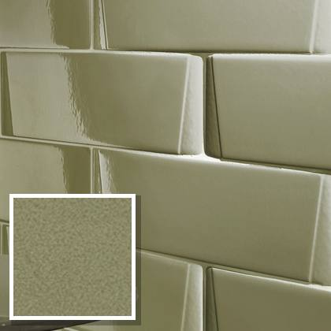
Product photoWall tile 7.5×30 cm (subway)
SKEMA BRIGHT GREEN 7,5X30
7.5×30 cm · white-body wall tile, double-fired, 10 mm · 1st choice
Est. weight ≈ 2.1 t
143 m²Ref #167205
 Product photo
Product photoWall tile 7.5×30 cm (subway)
SKEMA BRIGHT SCARLET 7,5X30
7.5×30 cm · white-body wall tile, double-fired, 10 mm · 1st choice
Est. weight ≈ 0.5 t
35 m²Ref #167207
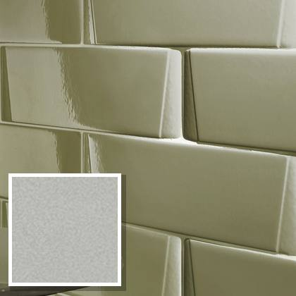
Product photoWall tile 7.5×30 cm (subway)
SKEMA BRIGHT SMOKE 7,5X30
7.5×30 cm · white-body wall tile, double-fired, 10 mm · 1st choice, off-shade
Est. weight ≈ 0.3 t
23 m²Ref #167203-FT
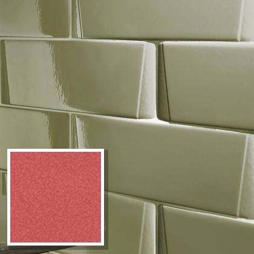
Product photoWall tile 7.5×30 cm (subway)
SKEMA BRIGHT SCARLET 7,5X30
7.5×30 cm · white-body wall tile, double-fired, 10 mm · 1st choice, off-shade
Est. weight ≈ 0.2 t
13 m²Ref #167207-FT
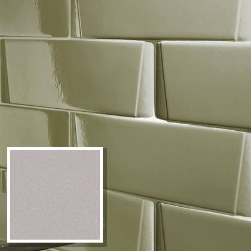
Product photoWall tile 7.5×30 cm (subway)
SKEMA MATT GREY 7,5X30
7.5×30 cm · white-body wall tile, double-fired, 10 mm · 2nd choice
Est. weight ≈ 0.2 t
13 m²Ref #167202-2
CRAYONS – subway 7.5×30 cm, white-body wall tile, double-fired 7 items · 8,537 m²
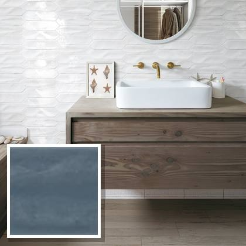
Product photoWall tile 7.5×30 cm (subway)
CRAYONS STORM 7.5X30
7.5×30 cm · white-body wall tile, double-fired, 10 mm · 2nd choice
Est. weight ≈ 37 t
2,501 m²Ref #167022
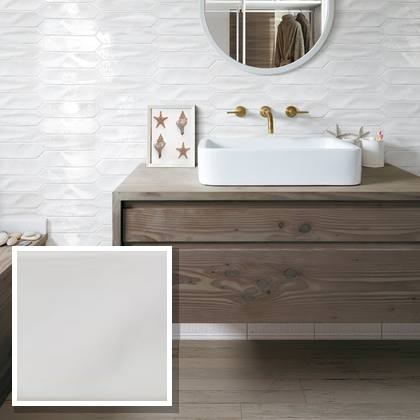
Product photoWall tile 7.5×30 cm (subway)
CRAYONS MATT WHITE 7.5X30
7.5×30 cm · white-body wall tile, double-fired, 10 mm · 2nd choice
Est. weight ≈ 36 t
2,494 m²Ref #167015
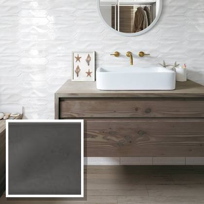
Product photoWall tile 7.5×30 cm (subway)
CRAYONS CHARCOAL 7.5X30
7.5×30 cm · white-body wall tile, double-fired, 10 mm · 2nd choice
Est. weight ≈ 19 t
1,308 m²Ref #167020
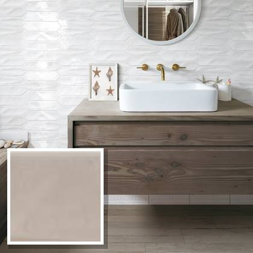
Product photoWall tile 7.5×30 cm (subway)
CRAYONS CARAMEL 7.5X30
7.5×30 cm · white-body wall tile, double-fired, 10 mm · 2nd choice
Est. weight ≈ 13 t
857 m²Ref #167018
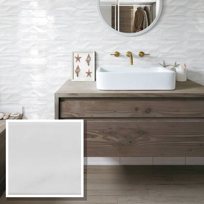
Product photoWall tile 7.5×30 cm (subway)
CRAYONS BRIGHT WHITE 7.5X30
7.5×30 cm · white-body wall tile, double-fired, 10 mm · 2nd choice
Est. weight ≈ 11 t
756 m²Ref #167016
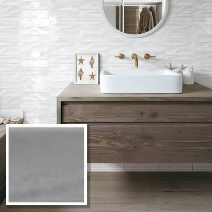
Product photoWall tile 7.5×30 cm (subway)
CRAYONS SMOKE 7.5X30
7.5×30 cm · white-body wall tile, double-fired, 10 mm · 2nd choice
Est. weight ≈ 7.9 t
543 m²Ref #167021
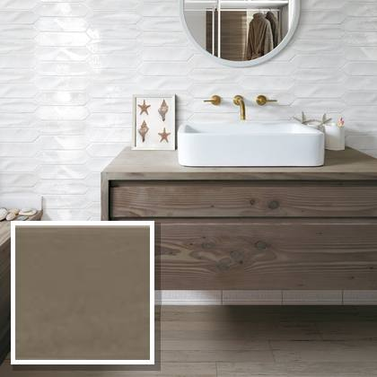
Product photoWall tile 7.5×30 cm (subway)
CRAYONS TAUPE 7.5X30
7.5×30 cm · white-body wall tile, double-fired, 10 mm · 2nd choice
Est. weight ≈ 1.1 t
78 m²Ref #167019
MATTER – subway 7.5×30 cm, rectified glazed porcelain 6 items · 2,946 m²
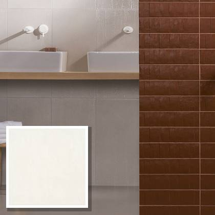
Product photoWall tile 7.5×30 cm (subway)
MATTER PLASTER STICK 7,5X30
7.5×30 cm · rectified glazed porcelain, 10 mm · 2nd choice
Est. weight ≈ 30 t
1,405 m²Ref #111120
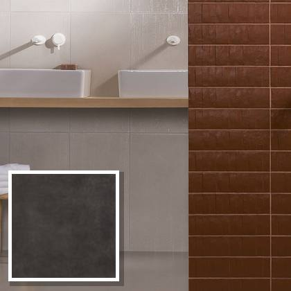
Product photoWall tile 7.5×30 cm (subway)
MATTER LEATHER STICK 7,5X30
7.5×30 cm · rectified glazed porcelain, 10 mm · 2nd choice
Est. weight ≈ 15 t
702 m²Ref #111122
 Series photo, colour differs
Series photo, colour differsWall tile 7.5×30 cm (subway)
MATTER EGGPLANT STICK 7,5X30
7.5×30 cm · rectified glazed porcelain, 10 mm · 2nd choice
Est. weight ≈ 6.5 t
307 m²Ref #111124
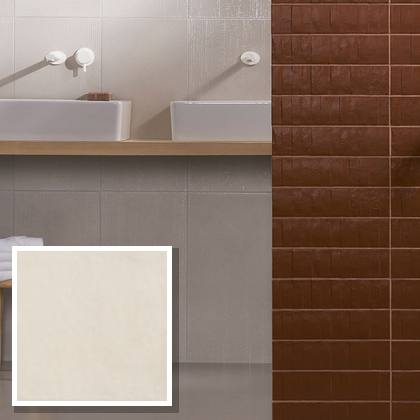
Product photoWall tile 7.5×30 cm (subway)
MATTER ROPE STICK 7,5X30
7.5×30 cm · rectified glazed porcelain, 10 mm · 2nd choice
Est. weight ≈ 5.1 t
243 m²Ref #111121
 Series photo, colour differs
Series photo, colour differsWall tile 7.5×30 cm (subway)
MATTER GREY BLUE STICK 7,5X30
7.5×30 cm · rectified glazed porcelain, 10 mm · 2nd choice
Est. weight ≈ 4.1 t
196 m²Ref #111123
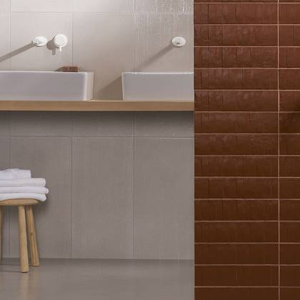
Series photo, colour differsWall tile 7.5×30 cm (subway)
MATTER ORANGE STICK 7,5X30
7.5×30 cm · rectified glazed porcelain, 10 mm · 2nd choice
Est. weight ≈ 1.9 t
93 m²Ref #111125
SKETCHES – decor 10×20 cm, white-body wall tile, double-fired 8 items · 2,744 m²
 Product photo
Product photoWall tile 10×20 cm (decor)
SKETCHES VERT BRIGHT WHITE 10X20
10×20 cm · white-body wall tile, double-fired, 10 mm · 2nd choice
Est. weight ≈ 8.4 t
575 m²Ref #150002
 Product photo
Product photoWall tile 10×20 cm (decor)
SKETCHES HOR 2 CHARCOAL 10X20
10×20 cm · white-body wall tile, double-fired, 10 mm · 2nd choice
Est. weight ≈ 6.7 t
458 m²Ref #150007
 Product photo
Product photoWall tile 10×20 cm (decor)
SKETCHES HOR 2 BRIGHT WHITE 10X20
10×20 cm · white-body wall tile, double-fired, 10 mm · 2nd choice
Est. weight ≈ 6.1 t
417 m²Ref #150003
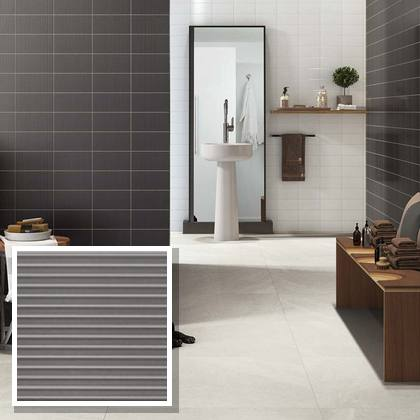
Product photoWall tile 10×20 cm (decor)
SKETCHES DOTS CHARCOAL 10X20
10×20 cm · white-body wall tile, double-fired, 10 mm · 2nd choice
Est. weight ≈ 4.8 t
325 m²Ref #150008
 Product photo
Product photoWall tile 10×20 cm (decor)
SKETCHES VERT CHARCOAL 10X20
10×20 cm · white-body wall tile, double-fired, 10 mm · 2nd choice
Est. weight ≈ 4.4 t
302 m²Ref #150006
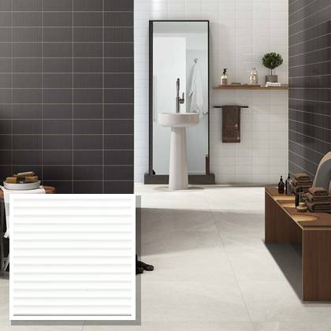
Product photoWall tile 10×20 cm (decor)
SKETCHES HOR 1 BRIGHT WHITE 10X20
10×20 cm · white-body wall tile, double-fired, 10 mm · 2nd choice
Est. weight ≈ 3.9 t
268 m²Ref #150001
 Product photo
Product photoWall tile 10×20 cm (decor)
SKETCHES HOR 1 CHARCOAL 10X20
10×20 cm · white-body wall tile, double-fired, 10 mm · 2nd choice
Est. weight ≈ 3.2 t
220 m²Ref #150005
 Product photo
Product photoWall tile 10×20 cm (decor)
SKETCHES DOTS BRIGHT WHITE 10X20
10×20 cm · white-body wall tile, double-fired, 10 mm · 2nd choice
Est. weight ≈ 2.6 t
179 m²Ref #150004
KARMA – subway 7.6×30.5 cm + hexagon 15.1×17.3 cm, glazed stoneware (grès) 10 items · 2,068 m²
 Product photo
Product photoWall tile 7.6×30.5 cm (subway)
KARMA BRICK PERLA 7,6x30,5
7.6×30.5 cm · glazed stoneware (grès), 10 mm · 2nd choice
Est. weight ≈ 12 t
571 m²Ref #154101
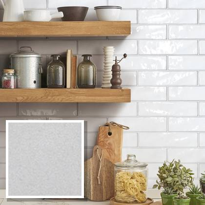
Product photoWall tile 7.6×30.5 cm (subway)
KARMA BRICK BIANCO 7,6X30,5
7.6×30.5 cm · glazed stoneware (grès), 10 mm · 2nd choice
Est. weight ≈ 9.3 t
431 m²Ref #154100
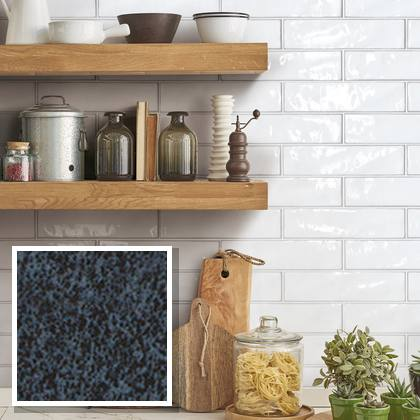
Product photoWall tile 7.6×30.5 cm (subway)
KARMA ESAGONA GRAFITE 15,1X17,3
7.6×30.5 cm · glazed stoneware (grès), 10 mm · 2nd choice
Est. weight ≈ 5.9 t
274 m²Ref #154115
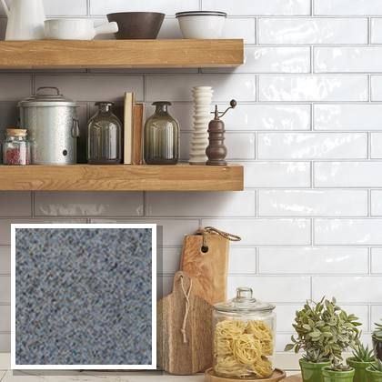
Product photoWall tile 7.6×30.5 cm (subway)
KARMA BRICK GRIGIO 7,6x30,5
7.6×30.5 cm · glazed stoneware (grès), 10 mm · 2nd choice
Est. weight ≈ 5.7 t
264 m²Ref #154103
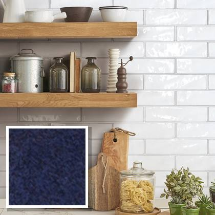
Product photoWall tile 7.6×30.5 cm (subway)
KARMA ESAGONA BLU 15,1X17,3
7.6×30.5 cm · glazed stoneware (grès), 10 mm · 2nd choice
Est. weight ≈ 4.0 t
185 m²Ref #154116
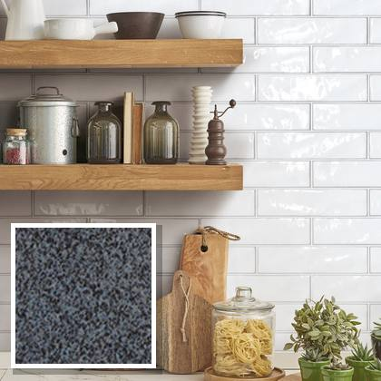
Product photoWall tile 7.6×30.5 cm (subway)
KARMA BRICK FUMO 7,6x30,5
7.6×30.5 cm · glazed stoneware (grès), 10 mm · 2nd choice
Est. weight ≈ 3.5 t
162 m²Ref #154104
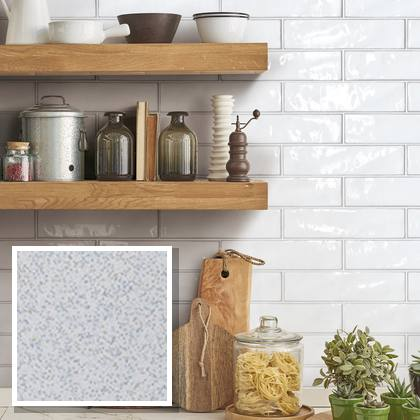
Product photoWall tile 7.6×30.5 cm (subway)
KARMA ESAGONA PERLA 15,1X17,3
7.6×30.5 cm · glazed stoneware (grès), 10 mm · 2nd choice
Est. weight ≈ 1.2 t
57 m²Ref #154111
 Product photo
Product photoWall tile 7.6×30.5 cm (subway)
KARMA ESAGONA GRIGIO 15,1X17,3
7.6×30.5 cm · glazed stoneware (grès), 10 mm · 2nd choice
Est. weight ≈ 0.9 t
44 m²Ref #154113
 Product photo
Product photoWall tile 7.6×30.5 cm (subway)
KARMA ESAGONA FUMO 15,1X17,3
7.6×30.5 cm · glazed stoneware (grès), 10 mm · 2nd choice
Est. weight ≈ 0.9 t
43 m²Ref #154114
 Product photo
Product photoWall tile 7.6×30.5 cm (subway)
KARMA BRICK GRAFITE 7,6x30,5
7.6×30.5 cm · glazed stoneware (grès), 10 mm · 2nd choice
Est. weight ≈ 0.8 t
37 m²Ref #154105
VIBRANT – slim brick 4.5×23 cm, glazed porcelain 4 items · 2,035 m²
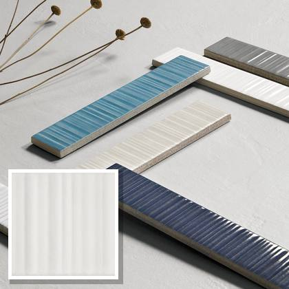
Product photoWall tile 4.5×23 cm (slim brick)
VIBRANT WHITE 4,5x23
4.5×23 cm · glazed porcelain, 10 mm · 2nd choice
Est. weight ≈ 18 t
800 m²Ref #168100
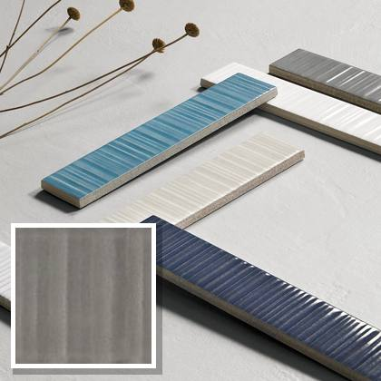
Product photoWall tile 4.5×23 cm (slim brick)
VIBRANT PEWTER 4,5x23
4.5×23 cm · glazed porcelain, 10 mm · 2nd choice
Est. weight ≈ 15 t
656 m²Ref #168103
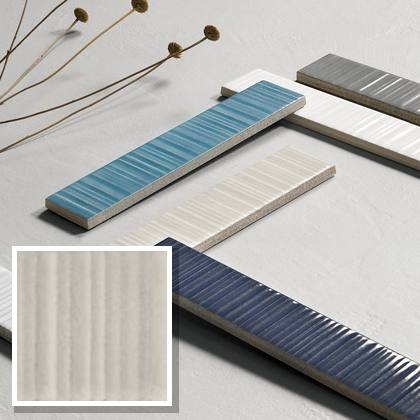
Product photoWall tile 4.5×23 cm (slim brick)
VIBRANT BEIGE 4,5x23
4.5×23 cm · glazed porcelain, 10 mm · 2nd choice
Est. weight ≈ 8.3 t
368 m²Ref #168102
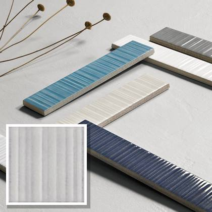
Product photoWall tile 4.5×23 cm (slim brick)
VIBRANT GREY 4,5x23
4.5×23 cm · glazed porcelain, 10 mm · 2nd choice
Est. weight ≈ 4.8 t
211 m²Ref #168101
OUTFIT – subway 7.5×30 cm + hexagon 15.6×18 cm, white-body wall tile, double-fired 15 items · 1,880 m²
 Product photo
Product photoWall tile 7.5×30 cm (subway)
OUTFIT BRICK STORM 7.5X30
7.5×30 cm · white-body wall tile, double-fired, 10 mm · 2nd choice
Est. weight ≈ 4.9 t
338 m²Ref #167116
 Product photo
Product photoWall tile 7.5×30 cm (subway)
OUTFIT BRICK SMOKE 7.5X30
7.5×30 cm · white-body wall tile, double-fired, 10 mm · 2nd choice
Est. weight ≈ 3.6 t
246 m²Ref #167114
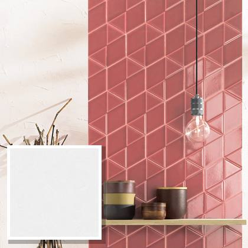
Product photoWall tile 7.5×30 cm (subway)
OUTFIT BRICK BRIGHT WHITE
7.5×30 cm · white-body wall tile, double-fired, 10 mm · 2nd choice
Est. weight ≈ 3.4 t
232 m²Ref #167112
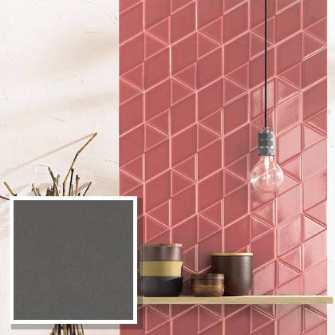
Product photoWall tile 7.5×30 cm (subway)
OUTFIT BRICK CHARCOAL 7.5X30
7.5×30 cm · white-body wall tile, double-fired, 10 mm · 2nd choice
Est. weight ≈ 3.1 t
216 m²Ref #167115
 Product photo
Product photoWall tile 7.5×30 cm (subway)
OUTFIT ESAGONA MATT WHITE
7.5×30 cm · white-body wall tile, double-fired, 10 mm · 2nd choice
Est. weight ≈ 3.1 t
211 m²Ref #167121
 Product photo
Product photoWall tile 7.5×30 cm (subway)
OUTFIT ESAGONA BRIGHT WHITE
7.5×30 cm · white-body wall tile, double-fired, 10 mm · 2nd choice
Est. weight ≈ 2.7 t
185 m²Ref #167122
 Product photo
Product photoWall tile 7.5×30 cm (subway)
OUTFIT BRICK CARAMEL 7.5X30
7.5×30 cm · white-body wall tile, double-fired, 10 mm · 2nd choice
Est. weight ≈ 1.5 t
104 m²Ref #167113
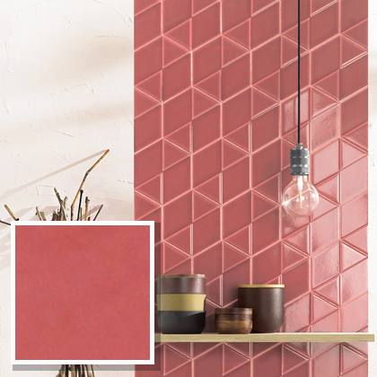
Product photoWall tile 7.5×30 cm (subway)
OUTFIT BRICK SCARLET 7.5X30
7.5×30 cm · white-body wall tile, double-fired, 10 mm · 2nd choice
Est. weight ≈ 0.9 t
62 m²Ref #167118
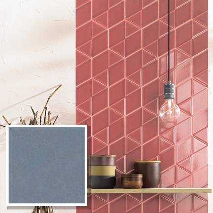
Product photoWall tile 7.5×30 cm (subway)
OUTFIT ESAGONA STORM 15,6x18
7.5×30 cm · white-body wall tile, double-fired, 10 mm · 2nd choice
Est. weight ≈ 0.8 t
54 m²Ref #167126
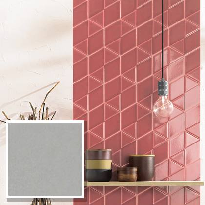
Product photoWall tile 7.5×30 cm (subway)
OUTFIT ESAGONA SMOKE 15,6x18
7.5×30 cm · white-body wall tile, double-fired, 10 mm · 2nd choice
Est. weight ≈ 0.8 t
53 m²Ref #167124
 Product photo
Product photoWall tile 7.5×30 cm (subway)
OUTFIT ESAGONA CHARCOAL
7.5×30 cm · white-body wall tile, double-fired, 10 mm · 2nd choice
Est. weight ≈ 0.7 t
47 m²Ref #167125
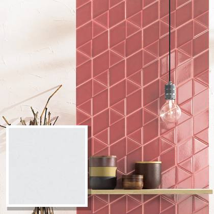
Product photoWall tile 7.5×30 cm (subway)
OUTFIT BRICK MATT WHITE 7.5X30
7.5×30 cm · white-body wall tile, double-fired, 10 mm · 2nd choice
Est. weight ≈ 0.6 t
43 m²Ref #167111
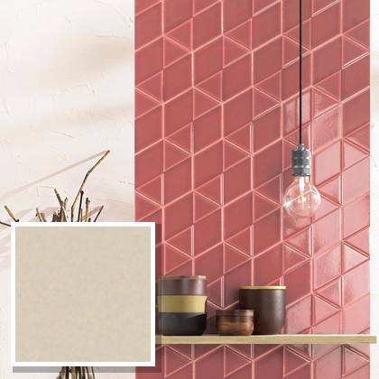
Product photoWall tile 7.5×30 cm (subway)
OUTFIT ESAGONA CARAMEL
7.5×30 cm · white-body wall tile, double-fired, 10 mm · 2nd choice
Est. weight ≈ 0.6 t
40 m²Ref #167123
 Product photo
Product photoWall tile 7.5×30 cm (subway)
OUTFIT ESAGONA SCARLET 15,6x18
7.5×30 cm · white-body wall tile, double-fired, 10 mm · 2nd choice
Est. weight ≈ 0.4 t
25 m²Ref #167128
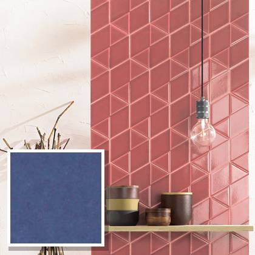
Product photoWall tile 7.5×30 cm (subway)
OUTFIT BRICK DENIM 7.5X30
7.5×30 cm · white-body wall tile, double-fired, 10 mm · 2nd choice
Est. weight ≈ 0.3 t
24 m²Ref #167117
NEW YORKER – subway 7.5×30 cm, white-body wall tile, double-fired 4 items · 1,773 m²
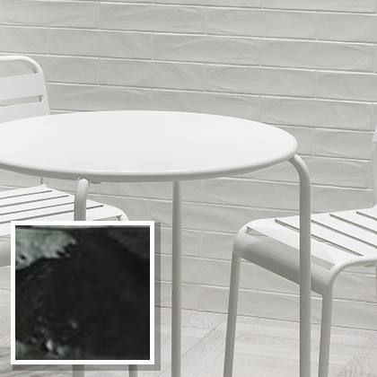
Product photoWall tile 7.5×30 cm (subway)
NEW YORKER CHARCOAL 7.5X30
7.5×30 cm · white-body wall tile, double-fired, 10 mm · 2nd choice
Est. weight ≈ 21 t
1,425 m²Ref #167005
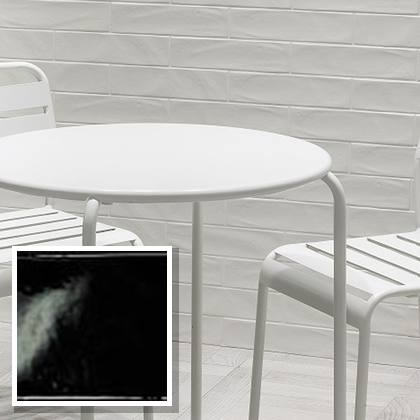
Product photoWall tile 7.5×30 cm (subway)
NEW YORKER NIGHT 7.5X30
7.5×30 cm · white-body wall tile, double-fired, 10 mm · 2nd choice
Est. weight ≈ 3.6 t
248 m²Ref #167006
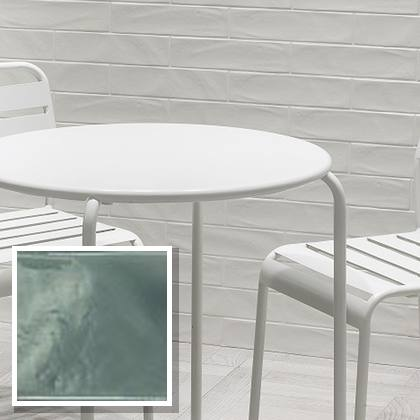
Product photoWall tile 7.5×30 cm (subway)
NEW YORKER SMOKE 7.5X30
7.5×30 cm · white-body wall tile, double-fired, 10 mm · 2nd choice
Est. weight ≈ 0.8 t
54 m²Ref #167004
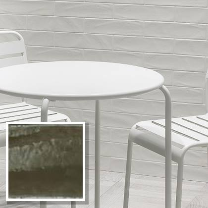
Product photoWall tile 7.5×30 cm (subway)
NEW YORKER TAUPE 7.5X30
7.5×30 cm · white-body wall tile, double-fired, 10 mm · 2nd choice
Est. weight ≈ 0.7 t
46 m²Ref #167002
DRESSCODE – diamond 14.8×12.9 cm, white-body wall tile, double-fired 9 items · 1,002 m²
 Product photo
Product photoDiamond-shape wall tile 14.8×12.9 cm
DRESSCODE PIANO BLACK MATT
14.8×12.9 cm · white-body wall tile, double-fired, 10 mm · 2nd choice
Est. weight ≈ 4.2 t
289 m²Ref #151001
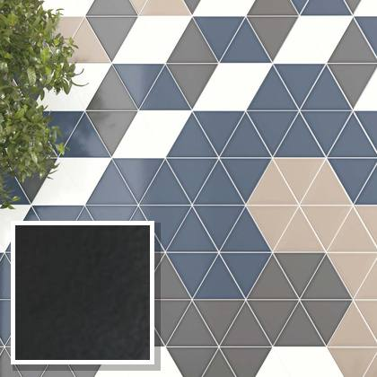
Product photoDiamond-shape wall tile 14.8×12.9 cm
DRESSCODE VERSO BLACK MATT
14.8×12.9 cm · white-body wall tile, double-fired, 10 mm · 2nd choice
Est. weight ≈ 2.4 t
165 m²Ref #151011
Diamond-shape wall tile 14.8×12.9 cm
DRESSCODE PIANO CHARCOAL GLOS
14.8×12.9 cm · white-body wall tile, double-fired, 10 mm · 2nd choice
Est. weight ≈ 2.0 t
136 m²Ref #151004
Diamond-shape wall tile 14.8×12.9 cm
DRESSCODE VERSO WHITE MATT
14.8×12.9 cm · white-body wall tile, double-fired, 10 mm · 2nd choice
Est. weight ≈ 1.6 t
106 m²Ref #151010
 Product photo
Product photoDiamond-shape wall tile 14.8×12.9 cm
DRESSCODE VERSO CHARCOAL GLOS
14.8×12.9 cm · white-body wall tile, double-fired, 10 mm · 2nd choice
Est. weight ≈ 1.5 t
100 m²Ref #151014
Diamond-shape wall tile 14.8×12.9 cm
DRESSCODE PIANO WHITE GLOSSY
14.8×12.9 cm · white-body wall tile, double-fired, 10 mm · 2nd choice
Est. weight ≈ 1.0 t
69 m²Ref #151002
Diamond-shape wall tile 14.8×12.9 cm
DRESSCODE PIANO CARAMEL GLOS
14.8×12.9 cm · white-body wall tile, double-fired, 10 mm · 2nd choice
Est. weight ≈ 1.0 t
68 m²Ref #151005
 Product photo
Product photoDiamond-shape wall tile 14.8×12.9 cm
DRESSCODE VERSO STORM GLOSSY
14.8×12.9 cm · white-body wall tile, double-fired, 10 mm · 2nd choice
Est. weight ≈ 0.7 t
47 m²Ref #151013
Diamond-shape wall tile 14.8×12.9 cm
DRESSCODE PIANO STORM GLOSSY
14.8×12.9 cm · white-body wall tile, double-fired, 10 mm · 2nd choice
Est. weight ≈ 0.3 t
22 m²Ref #151003
RIGA – subway 7.5×30 cm, rectified glazed porcelain 3 items · 758 m²
Wall tile 7.5×30 cm (subway)
RIGA SMALL CLOUD 7,5X30
7.5×30 cm · rectified glazed porcelain, 9.5 mm · 2nd choice
Est. weight ≈ 14 t
669 m²Ref #118022
Wall tile 7.5×30 cm (subway)
RIGA SMALL COFFEE 7,5X30
7.5×30 cm · rectified glazed porcelain, 9.5 mm · 2nd choice
Est. weight ≈ 1.3 t
62 m²Ref #118024
Wall tile 7.5×30 cm (subway)
RIGA SMALL DOVE 7,5X30
7.5×30 cm · rectified glazed porcelain, 9.5 mm · 2nd choice
Est. weight ≈ 0.6 t
27 m²Ref #118023
PULSE – subway 7.6×30.5 cm, glazed stoneware (grès) 4 items · 664 m²
Wall tile 7.6×30.5 cm (subway)
PULSE GRAY 7,6x30,5
7.6×30.5 cm · glazed stoneware (grès), 10 mm · 2nd choice
Est. weight ≈ 9.9 t
459 m²Ref #154213
Wall tile 7.6×30.5 cm (subway)
PULSE DUNE 7,6x30,5
7.6×30.5 cm · glazed stoneware (grès), 10 mm · 2nd choice
Est. weight ≈ 1.9 t
89 m²Ref #154211
Wall tile 7.6×30.5 cm (subway)
PULSE MISTY 7,6x30,5
7.6×30.5 cm · glazed stoneware (grès), 10 mm · 2nd choice
Est. weight ≈ 1.5 t
69 m²Ref #154212
Wall tile 7.6×30.5 cm (subway)
PULSE RUBY 7,6x30,5
7.6×30.5 cm · glazed stoneware (grès), 10 mm · 2nd choice
Est. weight ≈ 1.0 t
47 m²Ref #154216
HAMPTONS – subway 7.5×30 cm, white-body wall tile, double-fired 1 items · 494 m²
Wall tile 7.5×30 cm (subway)
HAMPTONS MATT CHARCOAL 7.5X30
7.5×30 cm · white-body wall tile, double-fired, 10 mm · 2nd choice
Est. weight ≈ 7.2 t
494 m²Ref #167012
ANTIQUE – slim brick 4.5×23 cm, glazed porcelain 5 items · 453 m²
Wall tile 4.5×23 cm (slim brick)
ANTIQUE WHITE 4,5x23
4.5×23 cm · glazed porcelain, 10 mm · 2nd choice
Est. weight ≈ 5.6 t
248 m²Ref #147007
Wall tile 4.5×23 cm (slim brick)
ANTIQUE AUTUMN 4,5x23
4.5×23 cm · glazed porcelain, 10 mm · 2nd choice
Est. weight ≈ 2.2 t
98 m²Ref #147004
Wall tile 4.5×23 cm (slim brick)
ANTIQUE BLUE 4,5x23
4.5×23 cm · glazed porcelain, 10 mm · 2nd choice
Est. weight ≈ 1.2 t
54 m²Ref #147008
Wall tile 4.5×23 cm (slim brick)
ANTIQUE BLACK 4,5x23
4.5×23 cm · glazed porcelain, 10 mm · 2nd choice
Est. weight ≈ 0.7 t
31 m²Ref #147006
Wall tile 4.5×23 cm (slim brick)
ANTIQUE SILVER 4,5x23
4.5×23 cm · glazed porcelain, 10 mm · 2nd choice
Est. weight ≈ 0.5 t
22 m²Ref #147005
SASSOSCRITTO – square 16.5×16.5 cm, glazed porcelain 4 items · 448 m²
Square wall tile 16.5×16.5 cm
SASSOSCRITTO SHORE 16,5X16,5
16.5×16.5 cm · glazed porcelain, 10 mm · 2nd choice
Est. weight ≈ 6.8 t
310 m²Ref #158011
Square wall tile 16.5×16.5 cm
SASSOSCRITTO ROPE 16,5X16,5
16.5×16.5 cm · glazed porcelain, 10 mm · 2nd choice
Est. weight ≈ 1.2 t
56 m²Ref #158012
Square wall tile 16.5×16.5 cm
SASSOSCRITTO ABYSS 16,5X16,5
16.5×16.5 cm · glazed porcelain, 10 mm · 2nd choice
Est. weight ≈ 1.1 t
49 m²Ref #158014
Square wall tile 16.5×16.5 cm
SASSOSCRITTO CORAL 16,5X16,5
16.5×16.5 cm · glazed porcelain, 10 mm · 2nd choice
Est. weight ≈ 0.7 t
33 m²Ref #158013
ALLURE – subway 7.5×30 cm, glazed porcelain 3 items · 425 m²
Wall tile 7.5×30 cm (subway)
ALLURE COTTON 7,5X30
7.5×30 cm · glazed porcelain, 10 mm · 2nd choice
Est. weight ≈ 7.9 t
378 m²Ref #154200
Wall tile 7.5×30 cm (subway)
ALLURE SILK 7,5X30
7.5×30 cm · glazed porcelain, 10 mm · 2nd choice
Est. weight ≈ 0.5 t
24 m²Ref #154201
Wall tile 7.5×30 cm (subway)
ALLURE VELVET 7,5X30
7.5×30 cm · glazed porcelain, 10 mm · 2nd choice
Est. weight ≈ 0.5 t
23 m²Ref #154202
BRICKART – slim brick 4.5×23 cm, glazed porcelain 2 items · 164 m²
Wall tile 4.5×23 cm (slim brick)
BRICKART HALF WHITE 4,5x23
4.5×23 cm · glazed porcelain, 10 mm · 2nd choice
Est. weight ≈ 2.8 t
121 m²Ref #168011
Wall tile 4.5×23 cm (slim brick)
BRICKART SAVANNAH 4,5x23
4.5×23 cm · glazed porcelain, 10 mm · 2nd choice
Est. weight ≈ 1.0 t
43 m²Ref #168013
MAGNOLIA – hexagon 15.6×18 cm, white-body wall tile, double-fired 3 items · 106 m²
Hexagon wall tile
MAGNOLIA ESAGONA MATT WHITE
15.6×18 cm · white-body wall tile, double-fired, 10 mm · 2nd choice
Est. weight ≈ 0.7 t
48 m²Ref #157000
Hexagon wall tile
MAGNOLIA ESAGONA SMOKE
15.6×18 cm · white-body wall tile, double-fired, 10 mm · 2nd choice
Est. weight ≈ 0.4 t
30 m²Ref #157003
Hexagon wall tile
MAGNOLIA ESAGONA STORM
15.6×18 cm · white-body wall tile, double-fired, 10 mm · 2nd choice
Est. weight ≈ 0.4 t
28 m²Ref #157005
THE WHARFS – hexagon 3 items · 84 m²
Hexagon wall tile
THE WHARFS ESAGONA PURE WH
hexagon · wall tile · 2nd choice
Est. weight ≈ 0.5 t
36 m²Ref #760090
Hexagon wall tile
THE WHARFS ESAGONA SMOKE
hexagon · wall tile · 2nd choice
Est. weight ≈ 0.3 t
24 m²Ref #760093
Hexagon wall tile
THE WHARFS ESAGONA CHARCOAL
hexagon · wall tile · 2nd choice
Est. weight ≈ 0.3 t
24 m²Ref #760094
Summary of contents
By grade
| Status | Items | Quantity (m²) | Share | Est. weight |
|---|---|---|---|---|
| 1st choice First commercial grade; collection discontinued by the maker. | 14 | 2,090 | 7.3% | ≈ 36 t |
| 1st choice, off-shade First-grade tiles from a shade batch that differs from the standard colour (fuori tono). | 2 | 36 | 0.1% | ≈ 0.5 t |
| 2nd choice Commercial second grade: minor surface or shade deviations possible. | 97 | 26,681 | 92.6% | ≈ 460 t |
| Total | 113 | 28,807 | 100% | ≈ 497 t |
By product type
| Product type | Items | Quantity (m²) | Share | Est. weight |
|---|---|---|---|---|
| Wall tile 7.5×30 cm (subway) | 50 | 18,257 | 63.4% | ≈ 293 t |
| Wall tile 10×20 cm (decor) | 8 | 2,744 | 9.5% | ≈ 40 t |
| Wall tile 7.6×30.5 cm (subway) | 14 | 2,732 | 9.5% | ≈ 59 t |
| Wall tile 4.5×23 cm (slim brick) | 11 | 2,652 | 9.2% | ≈ 60 t |
| Diamond-shape wall tile 14.8×12.9 cm | 9 | 1,002 | 3.5% | ≈ 15 t |
| Wall tile 7×28 cm | 11 | 782 | 2.7% | ≈ 17 t |
| Square wall tile 16.5×16.5 cm | 4 | 448 | 1.6% | ≈ 9.9 t |
| Hexagon wall tile | 6 | 190 | 0.7% | ≈ 2.8 t |
| Total | 113 | 28,807 | 100% | ≈ 497 t |
By collection
Shipping estimate
| Total volume (approx.) | ≈ 430–560 m³ |
| Total weight (approx.) | ≈ 497 t |
| 40′ High Cube containers | 19 |
| 20′ Standard containers | 21 |
Weights from the maker's packing data (kg per box) where published, otherwise estimated for the same material and thickness (white body ≈ 14.6 kg/m², porcelain and stoneware ≈ 21–23 kg/m²). Volume estimated from tile thickness plus boxes and pallets (about 1,000 small pallets of 22–34 m² each). Tiles fill containers by weight; final loading plan before shipment.
Container capacity used: 40′ HC ≈ 68 m³ / 26.5 t, 20′ ≈ 28 m³ / 24 t (practical loading).
Container capacity used: 40′ HC ≈ 68 m³ / 26.5 t, 20′ ≈ 28 m³ / 24 t (practical loading).